Ограды.

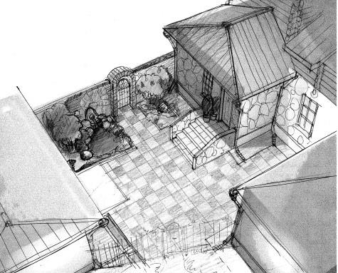
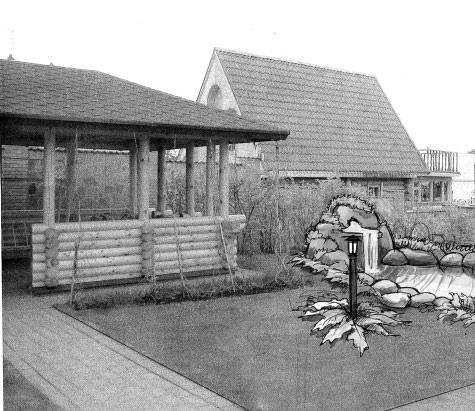
Забор или изгородь – больше, чем простое ограничение земельного участка. Ограда вашего земельного участка – сооружение многофункциональное. Прежде всего, ограда выделяет участок из общего пространства, проводит его границы, отделяет от соседних участков. Кроме того, ограда обеспечивает изоляцию территории, предотвращая нежелательное проникновение на участок животных и посторонних людей. Но помимо роли ограничителя пространства ограда имеет еще оформительское и психологическое значение. Сад – это место, где можно отдохнуть душой, расслабиться и освободиться от психического напряжения будней.
Внимание
Секрет заключается в том, что в результате действия эффекта замкнутости садового пространства возникает ощущение надежно защищенной частной жизни. Создается иллюзия того, что в результате проведения границ сада внешний мир остается за изгородью. Благодаря этим вертикальным барьерам возникает ощущение садового пространства.
По внешнему виду, цвету, плотности, высоте ограда должна сочетаться с общей концепцией участка, завершая и дополняя ее, а также вписываться в окружающую среду данного участка.
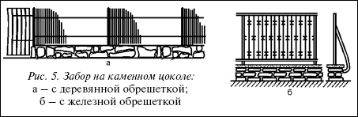
Рис. 5. Забор на каменном цоколе:а – с деревянной обрешеткой; б – с железной обрешеткой
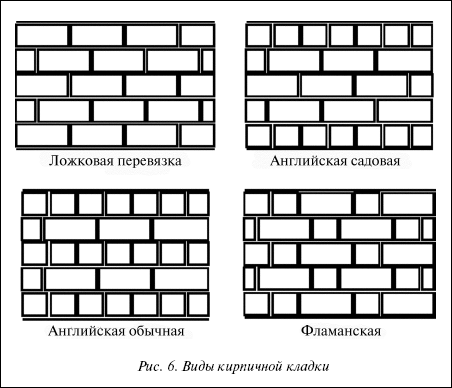
Рис. 6. Виды кирпичной кладки
Тип ограды зависит от требований оформления, ваших личных вкусов, размеров участка (на маленьком участке нельзя возводить сплошную массивную ограду), а также ваших возможностей. Материалом для различных типов оград может служить камень, кирпич, дерево, металлические сетка и проволока.
Ограда из пустотелых бетонных блоков1. Выполните разметку ограды, используя колышки и веревку.
2. Выройте траншею для ленточного фундамента.
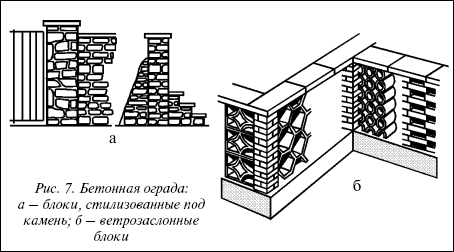
Рис. 7. Бетонная ограда:
а – блоки, стилизованные под камень; б – ветрозаслонные блоки
3. Уложите на дно траншеи сваренную арматурную решетку с вертикальными прутьями, которые должны войти прямо внутрь пустотелых блоков.
4. Приготовьте бетонную смесь для фундамента и залейте ею траншею до уровня поверхности почвы.
5. Выложите первый ряд блоков таким образом, чтобы вертикальные прутья арматуры располагались по центру блоков.
6. Заполните внутренние полости блоков раствором.
7. Возведите ограду из блоков, по ходу проверяя ее горизонтальность и вертикальность, а также ровность углов.
8. Оштукатурьте бетонную ограду. Сначала штукатурку нанесите грубым слоем, оставьте ее на 1 час, чтобы она немного схватилась, после чего выровняйте слой штукатурки при помощи рейки, а затем обработайте увлажненную поверхность специальной деревянной теркой. Толщина слоя штукатурки должна составлять 10–15 мм.
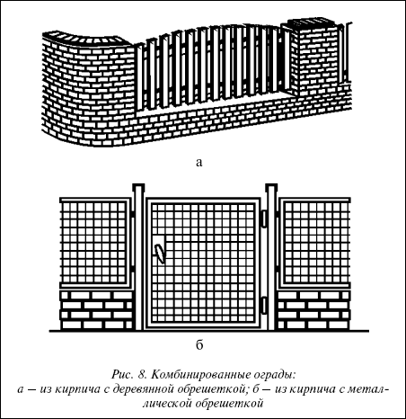
Рис. 8. Комбинированные ограды:
а – из кирпича с деревянной обрешеткой; б – из кирпича с металлической обрешеткой
Ограда из бетонных блоков, стилизованных под природный камень
1. Выполните разметку ограды при помощи колышков и натянутой между ними веревки.
2. Выройте траншею под ленточный фундамент и заполните ее до уровня почвы только что приготовленным бетонным раствором. Утрамбуйте и разровняйте бетонную заливку. Оставьте фундамент на одну ночь, чтобы он немного застыл.
3. Приготовьте кладочный раствор.
4. Расстелите раствор по бетону и уложите на него первый ряд блочной кладки, с усилием вдавливая каждый блок в раствор. Так как стилизованные блоки могут иметь различные формы и размеры, то трудно говорить о геометрической правильности рядов и о соблюдении правила перевязки швов. Некоторые блоки больших размеров могут перекрывать сразу 2 ряда. Блоки должны быть уложены ровно, а толщина горизонтальных и вертикальных швов между отдельными блоками должна составлять примерно 10–12 мм. Пустоты в швах недопустимы. Излишки раствора необходимо сразу же удалять при помощи кельмы.
5. Когда ограда будет выложена, обработайте швы расшивкой или отрезком металла.
6. На верхнюю грань стены уложите бетонные плиты для мощения дорожек, которые будут выполнять функцию венчающего карниза. Размеры венчающих плит должны немного превышать толщину ограды. Плиты укладывают на толстый слой кладочного раствора толщиной 10 мм. Осадите венчающие пяты резиновой киянкой. Швы между ними заполните раствором.
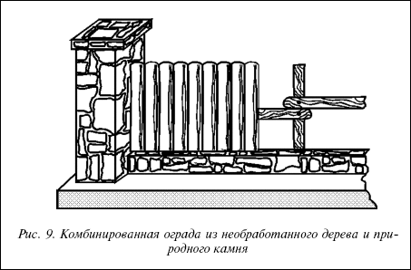
Рис. 9. Комбинированная ограда из необработанного дерева и природного камня
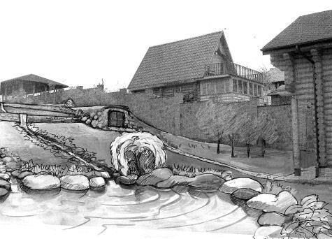
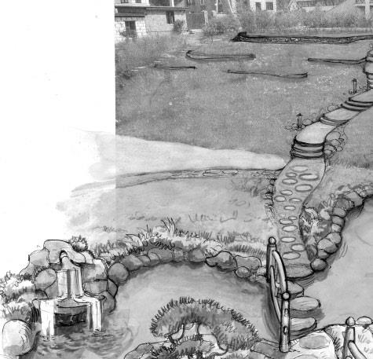
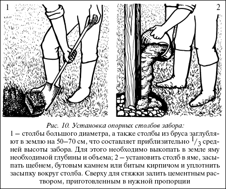
Рис. 10. Установка опорных столбов забора:
1 – столбы большого диаметра, а также столбы из бруса заглубляют в землю на 50–70 см, что составляет приблизительно V3 средней высоты забора. Для этого необходимо выкопать в земле яму необходимой глубины и объема; 2 – установить столб в яме, засыпать щебнем, бутовым камнем или битым кирпичом и уплотнить засыпку вокруг столба. Сверху для стяжки залить цементным раствором, приготовленным в нужной пропорции
Стены
Каменные и кирпичные стены – наиболее прочные и долговечные из всех видов ограждений. Нужную устойчивость стен обеспечивает бетонный фундамент. Для кладки подбирают материал, который сочетается с другими строениями. Это могут быть кирпич, природный камень, небольшие цементные блоки и т. д.
Совет
Возведение стен довольно накладно, но можно несколько удешевить строительство, если выполнить стены из кирпича, а затем облицевать более дорогим строительным материалом. Можно также использовать в качестве основы для стены уже бывший в употреблении строительный материал.
Целесообразная высота такой ограды лежит в пределах 1,5–1,8 м. Глубина закладки фундамента зависит от типа почвы, кроме того, его размер должен быть таким, чтобы выдержать давление стены. Иногда требуется укрепить ограду столбами. Для кладки готовят известковый раствор, состоящий из 1 части цемента, 1 части извести и 5 частей песка.
Деревянные заборыЗаборы значительно дешевле, экономичнее сплошных оград, к тому же по причине небольших размеров участков они гораздо шире распространены. Деревянные заборы достаточно просты в исполнении, практичны и прекрасно вписываются в окружающую среду.
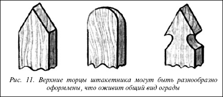
Рис. 11. Верхние торцы штакетника могут быть разнообразно оформлены, что оживит общий вид ограды
За редким исключением, предпочтение отдается продуваемым, а не гладким заборам. Сплошные заборы преграждают путь ветру и создают турбулентные потоки воздуха, повреждающие насаждения.
Внимание
Существует множество разновидностей заборов. Одной из наиболее распространенных форм деревянного забора в средней полосе России традиционно является штакетник.Он легкий, естественный, нарядный, достаточно экономичный и обеспечивает хорошую продуваемость участка, не создавая в непосредственной близости от себя завихрений воздушных потоков.
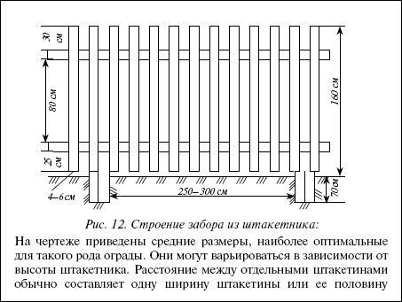
Рис. 12. Строение забора из штакетника:
На чертеже приведены средние размеры, наиболее оптимальные для такого рода ограды. Они могут варьироваться в зависимости от высоты штакетника. Расстояние между отдельными штакетинами обычно составляет одну ширину штакетины или ее половину
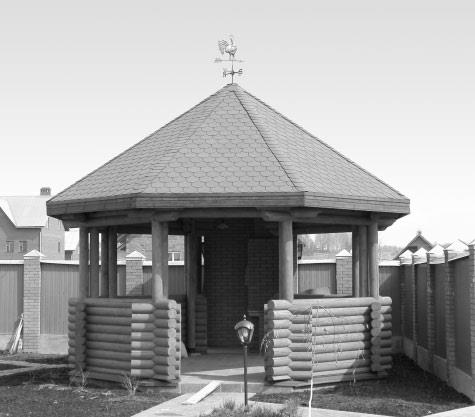
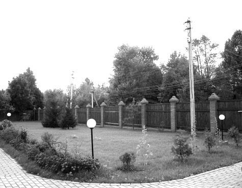
Такой забор состоит из несущих элементов(столбы и прикрепленные к ним слеги) и обрешетки,которую выполняют из реек, узких дощечек, круглого штакетника.
Деревянные столбыделают из бревен или бруса, нижний конец которых обрабатывают антисептическим средством, предотвращающим гниение, смолят, обжигают, оборачивают толем или рубероидом, а верхний конец обрабатывают на скос, чтобы с него стекала дождевая вода, или защищают кровельками из досок.
Опорные столбы деревянной ограды располагают на расстоянии 2,5–3 м друг от друга. Увеличивать интервал между столбами не рекомендуется, иначе вся конструкция утратит жесткость и прочность, сокращать – можно, если есть такая необходимость. Столбы заглубляют в землю на 50–70 см, чтобы обеспечить ограде устойчивость. Круглые опорные столбы должны быть диаметром до 20 см.
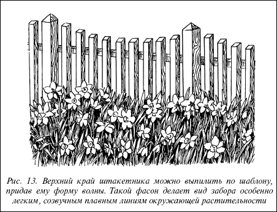
Рис. 13. Верхний край штакетника можно выпилить по шаблону, придав ему форму волны. Такой фасон делает вид забора особенно легким, созвучным плавным линиям окружающей растительности
Ямы для круглых столбов небольшого диаметра высверливают в грунте ручным буром на глубину 70–90 см. Столбы большого диаметра устанавливают в ямы глубиной 50–70 см с обязательной бутировкой щебнем или битым кирпичом. Для этого в подготовленную яму устанавливают столб и засыпают ее почти до верха бутовым камнем, щебнем или битым кирпичом. Засыпку уплотняют со всех сторон вокруг столба. Верхнюю часть бута обязательно закрепляют цементной стяжкой, заливая сверху раствором. В течение нескольких дней произойдет естественная усадка, и столбы прочно закрепятся в земле.
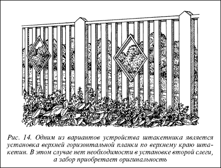
Рис. 14. Одним из вариантов устройства штакетника является установка верхней горизонтальной планки по верхнему краю штакетин. В этом случае нет необходимости в установке второй слеги, а забор приобретает оригинальность
Совет
Чтобы предотвратить гниение деревянных столбов, особенно той части, которая находится в земле, их следует предварительно обработать специальными веществами – антисептиками. Простейший и наиболее доступный – 10 %-й раствор медного купороса (1 кг купороса на 10 л воды). Раствор подогревают до 100 °C и наливают в бочку, куда затем опускают концы столбов на глубину 70–80 см. Столбы из сухого дерева держат в растворе 3 часа, из сырого – 6 часов.
Опорные столбы размещают со стороны участка, чтобы с улицы они были менее заметны и забор выглядел декоративнее.
Слеги к деревянным столбам крепят горизонтально. Их делают из толстых досок или бруса сечением 50x80 см и крепят к столбам при помощи врубок и накладок. Две слеги (верхнюю и нижнюю) размещают на некотором расстоянии друг от друга и к ним вертикально прибивают гвоздями деревянные планки.
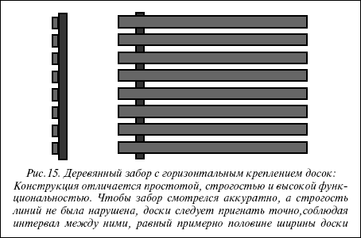
Рис. 15. Деревянный забор с горизонтальным креплением досок: Конструкция отличается простотой, строгостью и высокой функциональностью. Чтобы забор смотрелся аккуратно, а строгость линий не была нарушена, доски следует пригнать точно, соблюдая интервал между ними, равный примерно половине ширины доски
Планки крепят на 5 см выше уровня почвы с просветом между ними для предохранения от гниения. Чтобы ограда выглядела красиво, столбы и вертикальные планки должны быть примерно одинаковыми по высоте. Верхним торцам реек штакетника можно придать особую форму, а можно создать общий рисунок забора, например, выпиливая штакетник разными уровнями или волнами. В таком заборе можно делать «окошечки» и украшать его различными накладными рисунками.
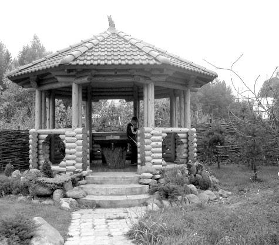
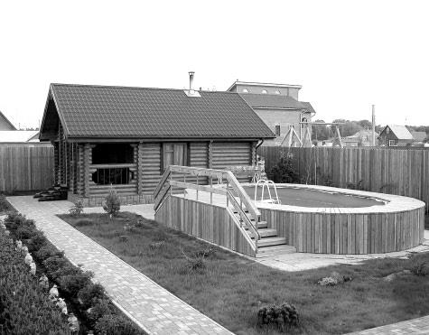
На заметку
Сделать штакетник не слишком сложно. По шнуру, туго натянутому на уровне верхнего торца штакетника между двумя опорами, отстоящими друг от друга на 2,5–3 м, прибивают планки, пользуясь специально изготовленным шаблоном. Шаблон состоит из доски, равной по ширине просвету между штакетником, и планки, прибитой к доске под прямым углом. Длина доски должна быть почти равна длине штакетника, длина планки – 40–50 см.
Ограду необходимо окрасить масляной краской для наружных работ. Покраска предохраняет древесину от гниения и придает ей нарядный вид. Вместо краски можно использовать специальные прозрачные пропитки и мастики, которые сохраняют естественный цвет дерева, предохраняют его от жучка и гниения, а также обладают консервирующим действием.
На скошенные грани деревянных деталей ограды рекомендуется нанести дополнительный слой краски или покрытия.
Кроме уже описанного штакетника существует множество разновидностей деревянных заборов. Если ваш участок достаточно большой, хорошо будет смотреться забор высотой 1,5–1,7 м из нешироких досок, закрепленных горизонтально между опорными столбами. Это довольно плотный забор, интервал между отдельными досками составляет половину их ширины. Такой забор прекрасно выполняет защитные функции, скрывает участок от посторонних глаз и эффективно гасит силу ветра, не создавая, однако, турбулентных воздушных завихрений. Частота размещения опорных столбов зависит от длины досок, но интервалы между столбами не должны быть слишком большими, чтобы доски не провисали.
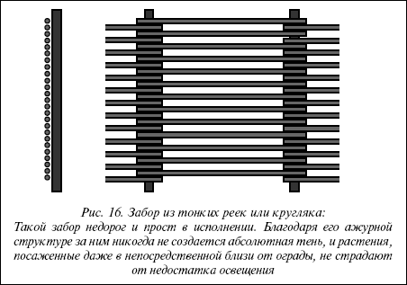
Рис. 16. Забор из тонких реек или кругляка:
Такой забор недорог и прост в исполнении. Благодаря его ажурной структуре за ним никогда не создается абсолютная тень, и растения, посаженные даже в непосредственной близи от ограды, не страдают от недостатка освещения
Доски крепят гвоздями к деревянным столбам, делая столько параллельных рядов, сколько требует заданная высота забора. Последнюю доску прикрепляют практически вровень с верхним торцом столба. После окончания строительства забор необходимо покрасить масляной краской или покрыть герметизирующей мастикой, предохраняющей от гниения и обеспечивающей его долговечность.
Внимание
Очень оригинально выглядит забор из узких реек или тонкого неошкуренного кругляка, который можно разместить уступами и использовать на местности, имеющей четко выраженный уклон. Принципы его сооружения остаются теми же, что и для других видов деревянных заборов.
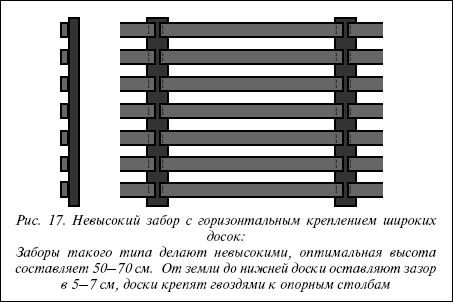
Рис. 17. Невысокий забор с горизонтальным креплением широких досок:
Заборы такого типа делают невысокими, оптимальная высота составляет 50–70 см. От земли до нижней доски оставляют зазор в 5–7 см, доски крепят гвоздями к опорным столбам
Конструкцию из деревянных реек и ошкуренного кругляка необходимо покрыть краской или защитным составом, неошкуренный кругляк или жерди можно не обрабатывать в течение нескольких лет. Кора сама предохранит дерево от гниения и плесени.
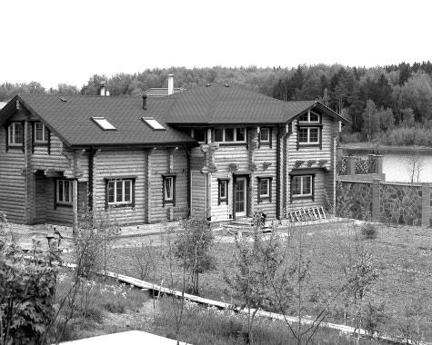
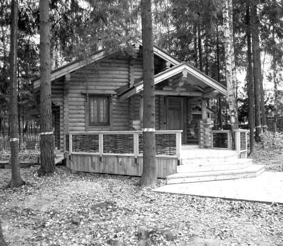
Совет
Если общий стиль оформления участка позволяет, можно сделать забор в стиле «ранчо» из обработанных или необработанных широких досок, которые размещают горизонтально и прибивают к несущим столбам гвоздями. Такие заборы делают невысокими, не более 2–3 рядов досок, и после окончания строительства красят или покрывают защитным средством.
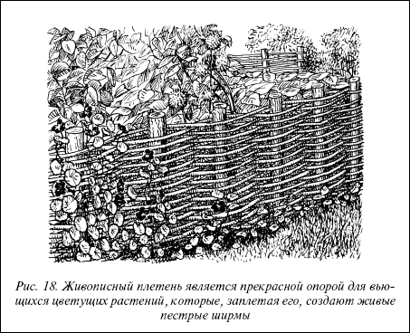
Рис. 18. Живописный плетень является прекрасной опорой для вьющихся цветущих растений, которые, заплетая его, создают живые пестрые ширмы
Особым видом деревянной ограды является плетень, в названии которого отражен процесс его изготовления. Несомненным достоинством плетня можно считать его живописность и дешевизну изготовления. Плетень можно делать из прутьев и веток древесных пород, обладающих хорошей гибкостью: лозы, ивы, орешника и др. Ветви можно пускать горизонтально, оплетая опорные столбы, или делать плетеное заполнение по каркасу или столбам и прибитым к нему трех слег.
Свое очарование имеет также невысокая ажурная ограда, получившая название охотничьей. Трудно объяснить причину возникновения такого названия, но этот тип ограды до сих пор широко распространен. Охотничья ограда представляет собой достаточно легкую конструкцию, не требующую массивных опорных столбов.
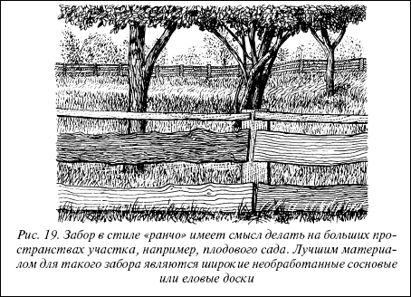
Рис. 19. Забор в стиле «ранчо» имеет смысл делать на больших пространствах участка, например, плодового сада. Лучшим материалом для такого забора являются широкие необработанные сосновые или еловые доски
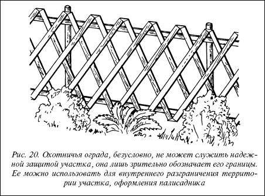
Рис. 20. Охотничья ограда, безусловно, не может служить надежной защитой участка, она лишь зрительно обозначает его границы. Ее можно использовать для внутреннего разграничения территории участка, оформления палисадника
К небольшим столбам прибивают 2 параллельные слеги сверху и снизу и к ним гвоздями крепят деревянные планки типа штакетин, сходящиеся под углом. Можно также использовать распиленные продольно жерди. Опорные столбы обычно размещают на расстоянии 2–2,5 м друг от друга, длина штакетин или жердей должна быть больше высоты опорных столбов.
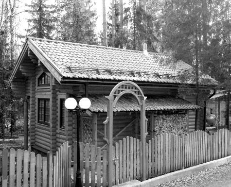
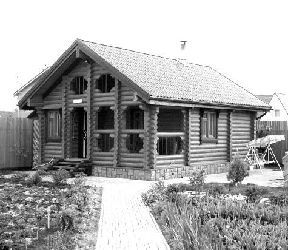
Значительно более практичными и долговечными являются металлические ограды и ограды из сетки-рабицы. Металлические ограды обычно изготавливают из готовых пролетов решетки различной конфигурации, прикрепленных между кирпичными или бетонными столбами. Кирпичные столбы не делают слишком громоздкими, их кладут в 1–1,5 кирпича, скрепляя между собой цементным раствором, приготовленным в пропорции: 1 часть цемента, 10 частей песка, 2 части извести. Столбы кладут на кирпичном или бутовом фундаменте.
Кирпичные фундаментные столбы делают сечением 380x380, 380x510 мм и более. Их выводят на 20–30 см над поверхностью земли. Заполнение между столбами выполняют из бутового камня или из кирпича и заглубляют на 15–20 см. Ширина заполнения из бутового камня 40 см, из кирпича – 25 см или 1 кирпич. Кирпичные столбы в зависимости от требований оформления можно штукатурить, облицовывать отделочными плитами из любого материала или оставлять в естественном виде.
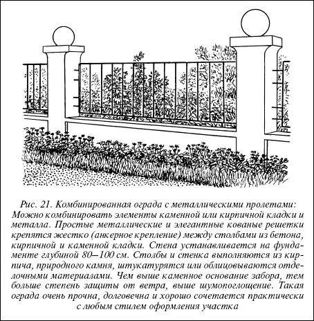
Рис. 21. Комбинированная ограда с металлическими пролетами: Можно комбинировать элементы каменной или кирпичной кладки и металла. Простые металлические и элегантные кованые решетки крепятся жестко (анкерное крепление) между столбами из бетона, кирпичной и каменной кладки. Стена устанавливается на фундаменте глубиной 80—100 см. Столбы и стенка выполняются из кирпича, природного камня, штукатурятся или облицовываются отделочными материалами. Чем выше каменное основание забора, тем больше степень защиты от ветра, выше шумопоглощение. Такая ограда очень прочна, долговечна и хорошо сочетается практически с любым стилем оформления участка
Среди городов России и стран СНГ уникальные кованые высокохудожественные решетки находятся в Москве, Санкт-Петербурге, Киеве, Львове, Одессе, Харькове, Казани, в старинных городах Урала, Сибири и Дальнего Востока.
В настоящее время ограды изготавливают практически все фирмы, связанные с производством изделий из металла, так как ограды или точнее заборы требуются всем домовладельцам, начиная от простых дачников и «крутых» домовладельцев двух-, трех– или четырехэтажных особняков до крупных домовладельцев в центре города.
Рисунки художественных оград разрабатываются архитекторами или художниками, затем элементы или детали отковываются на молотах квалифицированными кузнецами и собираются в единое целое на специальном столе слесарями, и сварщики завершают первый цикл работы. Затем места сварки звена ограды зачищаются, производится очистка от окалины, грунтовка и окончательная окраска.
За последнее десятилетие строительство коттеджей и дач в Подмосковье возросло в сотни раз. В дачных поселках с одноэтажными «скворечниками» со строго лимитированными размерами и формами 1950-1970-х гг. и на пустующих землях стали вырастать как грибы многоэтажные особняки самых разнообразных форм. Новые владельцы сразу же старались огородить свою территорию сплошным высоким деревянным или кирпичным забором. Более мудрые хозяева не спешили огораживать себя от окружающей природы, а продумывали вопрос, как спроектировать красивую кованую ограду и создать как бы драгоценное ожерелье вокруг своего детища – красивого коттеджа.
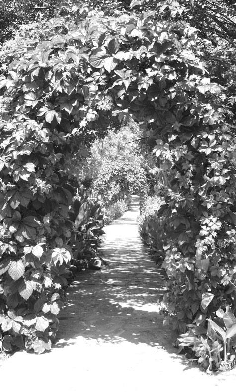
Существует большое количество кованых оград со всевозможными рисунками, выполненными в разных стилях. Наиболее часто кованые решетки собираются из многочисленных завитков и волют, которые группируются во всевозможные красивые комбинации. В других вариантах решеток к завиткам прибавляются геометрические элементы типа окружностей, ромбов, прямоугольников, прямых или наклонных линий. Если ограда выполняется в стиле барокко или рококо, то завитки как бы обрастают стилизованными накладками из листового металла в виде акантовых завитков, цветов или раковин. Ограды, выполненные в стиле модерн, могут нести на своих решетках произвольные элементы в виде разнообразных листьев и цветов, геометрических элементов или даже звериных морд. Были в Москве ограды, которые несли основную орнаментацию решеток на верхней части. Это были уникальные ограды, которые ограждали церковные территории в середине XVIII в., и были выполнены в стиле московского барокко. Таких оград не было даже в Центральной Европе, где кузнечное искусство было развито значительно выше, чем в России.
По своему конструктивному исполнению ограда может быть полностью металлической с коваными решетками или комбинированной – металл-дерево, металл-кирпич или камень. При комбинировании металл-кирпич или камень кованые решетки могут располагаться между кирпичными столбами или на цоколе. Низкие решетки могут располагаться на верхней части стены, а круглые или эллипсообразные кованые вставки могут вставляться в глухой проем стены.
При строительстве коттеджей довольно часто кроме высоких оград устанавливают и низкие ограды, разделяющие внутреннюю территорию сада. В этих случаях красивые калиточки вносят неповторимый колорит в общую картину вашего сада.
В современных коттеджах довольно часто устанавливают внутренние решетки, которые играют роль перегородок. Эти решетки делаются более изящными со вставками в виде цветов, листьев, насекомых, рыб или животных. Для изготовления таких решеток требуется большое искусство и мастерство как художника, так и кузнеца-исполнителя, так как эти фигурки должны быть очень выразительными, лаконичными и даже иметь свой «характер». Кроме этого кузнец должен придать этим фигуркам определенный объем и характерную форму.
Кованые ворота, калитки, двериВорота всегда являлись лицом любой усадьбы, и поэтому каждый хозяин стремился придать им особую оригинальность и выразительность. Парадные двери богатых домов также отделывались с особой тщательностью, ведь по ним судили о богатстве и вкусе хозяина.
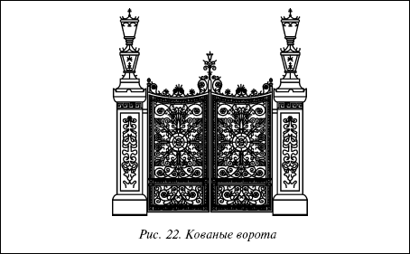
Рис. 22. Кованые ворота
В те времена, когда цены на железо были высокие, двери и ворота украшались в основном деревянной резьбой. Позднее металл начинает постепенно внедряться в строительстве. Двери и ворота укрепляются металлическими накладками и специальными запорами с замками. Петли делаются в виде мощных жиковин, лицевые накладки которых проходят по всей ширине двери и дополнительно скрепляют все доски. Для стучания и открывания дверей и ворот навешивались специальные ручки-кольца, которые назывались «стукалами» или «дверными молотками». Мощные жиковины и ручки-стукала, выполненные на высоком художественном уровне, в дальнейшем широко использовались и на цельнометаллических дверях и воротах.
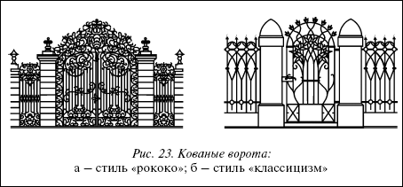
Рис. 23. Кованые ворота:а – стиль «рококо»; б – стиль «классицизм»
В крупных городах России ограды, ворота и калитки украшались в так называемом «русском стиле»: использовались такие элементы, как «окружности», «завитки», «волюты» и т. п. Однако в орнаментацию включались и другие стили, например псевдоготика, модерн и классика.
Теперь хочется остановиться на кованых дверях и дверях с коваными вставками. Цельнокованые кружевные двери обычно устанавливаются внутри здания для разделения залов, но иногда их ставят и снаружи, если основная дверь отнесена внутрь ниши. Такие кружевные внутренние двери создают не только оригинальный и богатый вид интерьера, но и обеспечивают сохранность помещения. Декоративная отделка двери и кованый рисунок решетки дополняют друг друга и создают единый художественный ансамбль.
В настоящее время многие кузнечные фирмы Москвы изготавливают ограды, ворота, калитки и двери на довольно высоком уровне. По желанию заказчиков ворота могут быть как сплошными, так и «прозрачными». Сплошные ворота закрываются листовым металлом, на котором с двух сторон накладывается кованый рисунок. Сверху ворот обычно делается прозрачный орнамент.
При изготовлении кованых ворот, калиток или дверей по желанию заказчика можно включить любой фрагмент, например вензель с инициалами, стилизованный герб, вазу с цветами или фруктами, выкованную из железа или меди, ветку дуба и даже собственный портрет или портрет любимого зверька.
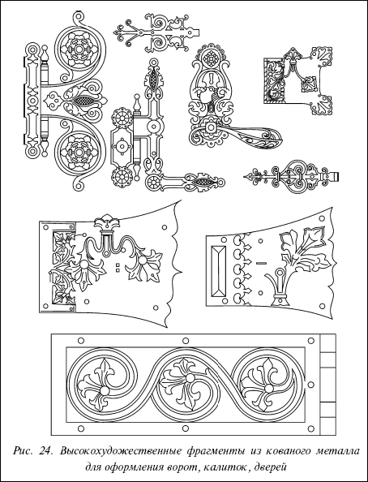
Рис. 24. Высокохудожественные фрагменты из кованого металла для оформления ворот, калиток, дверей
В заключение необходимо сказать несколько слов об установке ворот. Это очень ответственная и трудоемкая операция, так как каждая створка ворот имеет довольно значительный вес, который при открывании и закрывании ворот раскачивает столбы. В связи с этим металлические столбы необходимо устанавливать в широкие ямы глубиной около 1 м и заливать бетоном. По возможности столбы сверху необходимо связывать между собой металлической аркой, а по бокам укреплять контрфорсами. С противоположной от въезда стороны столбы фиксируются самой оградой и последующими столбами. В том случае, если для установки ворот делаются кирпичные или каменные столбы, то их необходимо армировать внутри металлической трубой и связывать с оградой. Подставы для петель ворот должны также жестко связываться с внутренней металлической трубой и заделываться в кирпичной или каменной кладке. Каждый застройщик должен помнить, что красивые кованые ворота больше «говорят» о хозяине, чем его автомобиль.
Внимание
Не рекомендуется сетчатую ограду крепить на столбах из кирпича или камня. Массивные столбы не сочетаются с легкой ажурной сеткой.
Столбы различной формы можно изготавливать из бетона, используя в качестве заполняемой формы опалубку из досок, обшитых листовым железом. Целесообразно изготовить несколько форм, причем каждую на заливку 3–4 столбов одновременно, учитывая довольно долгий срок затвердевания бетона.
Для литья столбов изготовляют форму-опалубку из досок толщиной 2,5 см. В форме делают 4 прямоугольных отверстия для закладки отрезков полосовой стали с просверленными в них отверстиями под крепежные болты.
Отрезки полосовой стали должны быть вмурованы в столбы в местах крепления ограды.
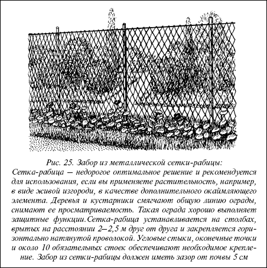
Рис. 25. Забор из металлической сетки-рабицы: Сетка-рабица – недорогое оптимальное решение и рекомендуется для использования, если вы применяете растительность, например, в виде живой изгороди, в качестве дополнительного окаймляющего элемента. Деревья и кустарники смягчают общую линию ограды, снимают ее просматриваемость. Такая ограда хорошо выполняет защитные функции. Сетка-рабица устанавливается на столбах, врытых на расстоянии 2–2,5 м друг от друга и закрепляется горизонтально натянутой проволокой. Угловые стыки, оконечные точки и около 10 обязательных стоек обеспечивают необходимое крепление. Забор из сетки-рабицы должен иметь зазор от почвы 5 см
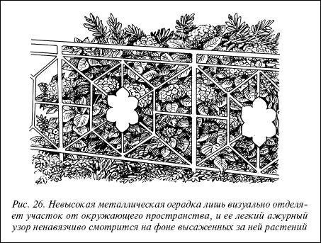
Рис. 26. Невысокая металлическая оградка лишь визуально отделяет участок от окружающего пространства, и ее легкий ажурный узор ненавязчиво смотрится на фоне высаженных за ней растений
Бетонные столбы сечением 12x12 или 15x15 см делают с арматурой, чтобы увеличить их жесткость и прочность. В качестве арматуры рекомендуется использовать стальной прут диаметром 8-10 см.
В деревянную форму вкладывают арматуру в виде 2 стальных прутов и заполняют бетонной смесью. Смесь затем тщательно уплотняют, выравнивают ее поверхность и дожидаются полного застывания.
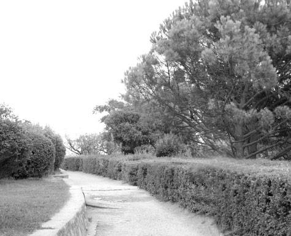
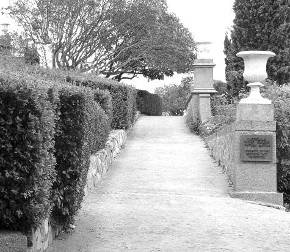
Можно также сделать арматуру в виде каркаса. Каркас вяжут из арматурной проволоки диаметром 6–8 мм, предусматривая скобы для крепления. Уложенный в форму каркас заливают бетоном.
Столбы, на которые навешивают ворота, укрепляют арматурой, в центр кладки вставляют металлическую трубу или армируют кладку металлической сеткой через 2–4 ряда.
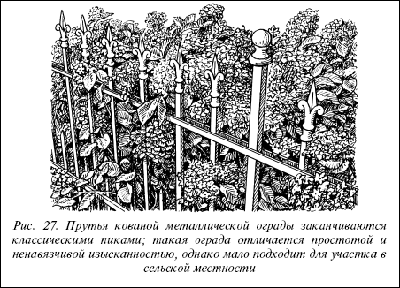
Рис. 27. Прутья кованой металлической ограды заканчиваются классическими пиками; такая ограда отличается простотой и ненавязчивой изысканностью, однако мало подходит для участка в сельской местности
Готовые решетчатые пролеты металлического забора (кованые или изготовленные по иной технологии) крепят между опорными столбами. Решетка из железных прутьев очень крепкая, прозрачная и легкая на вид. Она является отличной опорой для вьющихся растений.
Внимание
Весьма практичны и просты в исполнении заборы из металлической сетки-рабицы. Ограды из проволочной сетки за счет ажурности создают впечатление отсутствия забора, особенно когда такую ограду окрашивают в зеленые тона. Для оград используют оцинкованную или неоцинкованную проволочную сетку с ячейками 3х3-5х5 см. Высота ограждения 1,5–2 м.
Ограду из проволочной сетки лучше крепить к отрезкам стальных труб длиной по 2,5–3 м, диаметром 5–7 см на бетонном основании. Металлические столбы очень долговечны, что продлевает жизнь всей ограде в целом. При отсутствии труб сетку крепят к деревянным или железобетонным столбам. Но в этом случае столбы должны быть меньшего размера: деревянные – диаметром 12–14 см, железобетонные – сечением 10x10-11x11 см.
На заметку
Металлические столбы боятся воды, которая, попадая в них и замерзая зимой, может повредить столб. Поэтому столбы заполняют раствором, забивая в их верхнюю часть просмоленные деревянные пробки, или закрывают крышками.
При использовании раствора его заливают поверх забитой в трубу деревянной пробки. Для установки столбов из труб бурят ямы небольшого диаметра, глубиной 70–80 см, которые заполняют раствором бетона со щебенкой в пропорции: 1 часть цемента, 3 части речного песка и 3 части щебенки.
Подземную часть металлических столбов покрывают горячим битумом, сплавленным с каменноугольным лаком. Применяют также смеси густого каменноугольного и этиленового лаков в соотношении 1: 1 или густого каменноугольного лака и эпоксидной смолы (3: 1) с добавлением 20–30 % цемента.
Совет
Иногда для уменьшения расхода бетона на песчаных почвах делают опалубку. Трубы заглубляют в бетон пустотелыми. К верхним концам их приваривают ушки, скобы или хомуты из проволоки или обычные гайки и протягивают через них проволоку, к которой прикрепляют сетку, чтобы она не провисала. Кроме того, посередине столбов и на уровне поверхности земли сетку дополнительно крепят проволочной обвязкой.
Для защиты столбов и сетки от ржавчины их окрашивают краской для наружных работ по металлу или покрывают специальным лаком. Наиболее подходящий цвет для сетчатых заборов – зеленый (разных оттенков).
Для обеспечения устойчивости забора по углам несущие столбы подпирают укосинами – врытыми под наклоном столбиками. Это необходимо для того, чтобы опорные столбы выдерживали натяжение сетки.
Если вы рассматриваете изгородь не как архитектурно-строительное сооружение, выполняющее к тому же еще и защитные функции, а лишь как оптическую преграду, элемент, обозначающий границы участка, вам вполне подойдут различные типы простых и изящных невысоких кованых металлических оград. Они могут быть самой различной конфигурации, иметь разнообразные декоративные элементы, варьироваться по высоте. Уход за такими оградами заключается преимущественно в защите их от ржавчины. Для этого металлические ограды красят масляной краской для наружных работ с металлом или покрывают специальным консервирующим лаком.
Внимание
Необходимой частью ограды являются ворота и калитка. Их оформляют в том же стиле, что и ограду, чтобы их внешний вид, материал, цвет, конфигурация соответствовали общему виду ограды, не нарушали его целостности. Для деревянной ограды изготовляют деревянные ворота и калитку, для сетчатой – металлические. Для живой изгороди ворота и калитка могут быть и деревянными, и металлическими.
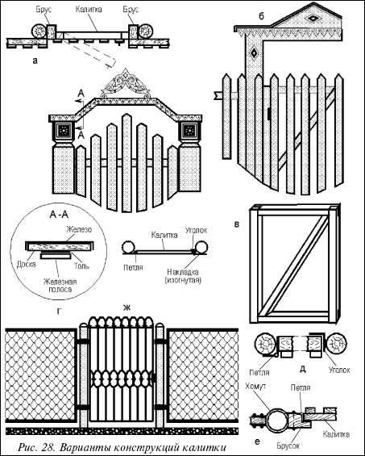
Рис. 28. Варианты конструкций калитки
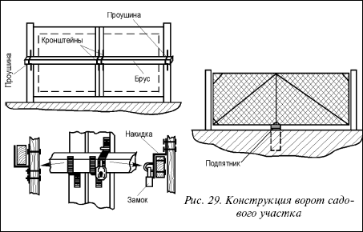
Рис. 29. Конструкция ворот садового участка
Ворота и калитка должны быть прочными, долговечными, удобными в пользовании.
Ворота выполняются из двух створок, ширина ворот должна составлять не менее 2,5 м для въезда легкового автомобиля и не менее 3 м для въезда при необходимости грузовой машины. Если, исходя из образа вашей жизни, в воротах нет необходимости, можно предусмотреть в ограде одну съемную секцию нужной ширины на всякий случай для обеспечения эпизодического заезда транспорта.
Ширина калитки 80–90 см, примерно такая же, как ширина пешеходной дорожки от калитки к дому. К калитке при необходимости можно провести электрический звонок.
Ворота и калитка должны открываться внутрь участка, чтобы не загораживать дорогу или улицу.
Створки ворот изнутри оборудуют запорами и ставят ограничители. Чтобы створки самопроизвольно не закрывались, применяют пружинные фиксаторы.
Столбы для ворот должны быть немного массивнее, чем для ограды и калитки, так как они испытывают дополнительную нагрузку, их надо лучше укрепить.
Совет
Надежность и долговечность работы во многом зависит от качества выполнения фундаментов под опорные столбы. Их закладывают на глубину 50-100 см. Пазухи ямы засыпают щебнем, тщательно утрамбовывают, а затем бетонируют.
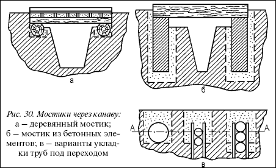
Рис. 30. Мостики через канаву:а – деревянный мостик; б – мостик из бетонных элементов; в – варианты укладки труб под переходом
Деревянный каркас створок ворот изготовляют из брусков сечением 5x10 см, соединяя их в углах, и укрепляют конструкцию диагональной планкой. Собирают рамы на земле, навешивают без обрешетки. Амбарные петли крепят к металлическим и бетонным столбам через деревянные накладки. Обрешетку делают после навески рам. Просвет между землей и створками калитки и ворот должен быть не менее 10–15 см, чтобы снег не мешал открывать их. Калитку и ворота можно украсить различными деталями декоративного оформления.